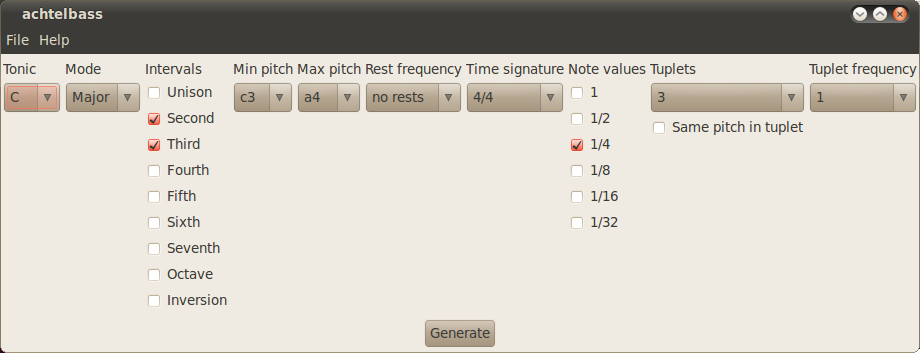

Often when i explain to people what this program actually
does they reply that they don't think that a computer
program might be able to produce enjoyable music. I know
that. I don't think that random generated thirds and fifths
are likely to sound pleasureable and i never intended to
prove this. The intention of this program never was to
generate music, an attempt to do so would fail as inevitable
as if one tried to generate lyric or prose by randomly
composing character bigrams and trigrams. Its absurd.
The intention of this program is to generate randomly
arranged sheet music in order to practice sight reading.
Various aspects like intervals, note values and tuplets may
be added or disabled so one can practice purposeful those
elements one needs.
Nevertheless, in future versions of this program i would
like to add a machine learning component which will analyze
pmx-files of sheet music from
http://icking-music-archive.org/ and other sources. In
the next step this program will generate sheet music as
initially intended, but it will prefer those combinations of
chosen elements that were found more often during the learning
process, thus yielding to a more enjoyable practice process.
The program can be invoked in two ways.
From the command line:
$ python achtelbass.py
The following parameters can be passed as command line arguments:
None of them must be passed, any omitted parameter will be filled with a default value.
To check out the exact syntax of passing parameter try
$ python achtelbass.py --help
The programm can be invoked within a graphical user interface too. The command line for launching the graphical user interface is:
$ python gachtelbass.py
It is possible and probably desirable to have a web interface to achtelbass.
The python scripts themselves produce only PMX code, which needs to be converted by PMX, the MusixTeX preprocessor, into the MusixTeX format. This in turn needs the MusixTeX program, which generates DVI files. Those can be displayed or printed directly, but probably one wants to convert them to PDF. So another program is required. Last, a viewer for PDF files is required in order to display the sheet music. For the optionally MIDI files a MIDI player is required.
The software requirements are:
The text on the buttons and in the menu of the GUI is
loaded from a file called locales_xx.py, where xx stands
for a two letter code of the language in question. The file
contains only a dictionary with the english terms as keys
and the terms in the target language as values.
If you wish to translate the application into a new
language you first need to make a copy the file
locales_template.py, for instance
to locales_de.py in case the new language was german. Then
you replace all the values in the dictionary with german
terms for the corresponding items.
If you want to associate keyboard keys like 'F' for the
file menu, all you have to do is to add an underscore right
in front of that character that shall become the mnemonic
character while editing the dictionary values.
Caveat when introducing new widgets.
When new widgets are introduced to the application or old
ones are modified, the locales_template.py file and all the
existing locales files need to be modified too.
However, this is only true for the accelerations with the
ALT-key. The accelerations with the CTRL-key work
different. They are bound to the key in question (e.g.
'CTRL+S' for Save) in the code where the widget is
defined. Maybe one day there will be a second dictionary
for those key bindings too.
The first Version of achtelbass i wrote in 2005 or 2006. The algorithm was implemented in yabasic and did not use oop nor did it use external programs like PMX and MusiXTeX. Instead it was written in a functional manner and dispayed the score all by itself, using the builtin graphics functions. The code is available here. You can run it with the yabasic interpreter. You need to invoke it from the command line, where the program asks you which key and which difficulty level to choose. After these questions are answered, a graphical window pops up, showing the notes.
The yabasic version featured four difficulty levels, where the lowest level displayed the letter names of the notes instead of the notes in and between the note lines. The note values were quarters only and the intervals were seconds only.
The second difficulty level displayed the notes instead of the letters, but the intervals and the note values were the same as in the first level.
In the third difficulty level the note values still consisted of quarters only, but the intervals consisted of seconds and thirds and some few notes were replaced by rests.
In the fourth difficulty level various intervals and note values were mixed and the range of pitches was extended beyond the five note lines.
Note that in the image above the accidental in the f-major scale is a sharp in front of the 'a' and the half notes are displayed as filled circles. I never fixed that in the yabasic implementation, because at that time i began to learn Perl and wrote the program again from scratch.
About 2008 i wrote a perl script that worked similar to the yabasic program but made use of MusixTeX. The goal was to achieve pretty layout, which the TeX programs are well known for.
The implementation in Perl was invoked from the command line and wrote the output into a file, that was read afterwards by PMX, which called MusixTeX, which in turn wrote a DVI file. After that DVI file was converted to PDF the result could be viewed or printed. The complete command line was:
perl achtelbass.pl > out.pmx && pmx out.pmx && dvipdf out.dvi && evince out.pdf
The program did not take any parameters and did not have a GUI. Any changes were to be made in the code itself. The code is available here and here. The former is simpler than the latter one, the latter uses some more elaborated patterns in arranging the notes.
This is the current version (2010). The revision history is available at http://github.com/letztes/achtelbass.